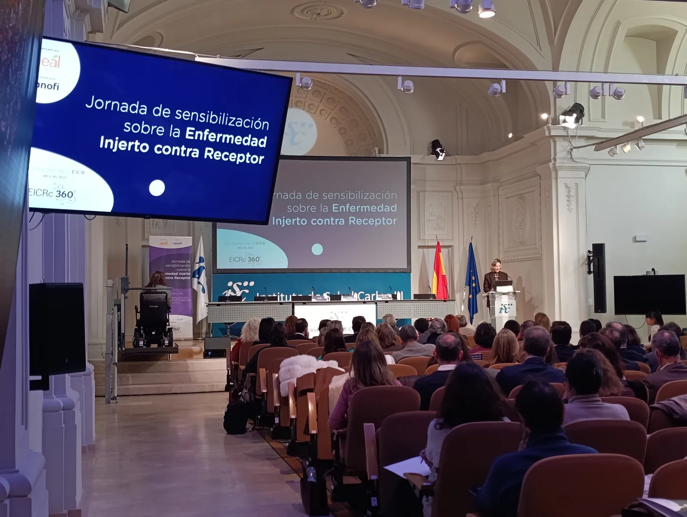

La EICR crónica afecta a hasta el 40 % de las personas trasplantadas. AEAL reclama visibilidad, atención integral y acceso equitativo a nuevas terapias.
La EICR crónica: una enfermedad invisible tras el trasplante de médula ósea que requiere un abordaje integral España es referente internacional en trasplantes de médula ósea, un procedimiento que ofrece una oportunidad de curación a miles de pacientes cada año. Sin embargo, cerca del 40 % de las personas trasplantadas desarrolla EICR crónica, una enfermedad que aparece cuando las células del donante atacan los tejidos del receptor, provocando inflamación y fibrosis en distintos órganos. Se trata de la principal causa de morbilidad y mortalidad tardía tras el trasplante y supone un importante deterioro de la calidad de vida.
Reivindicar la EICR crónica como enfermedad Uno de los principales mensajes lanzados desde AEAL es la necesidad de que la EICR crónica sea reconocida como una enfermedad en sí misma, y no únicamente como una complicación o secuela del trasplante. En este contexto, la asociación ha impulsado un manifiesto para reclamar mayor visibilidad, diagnóstico precoz, más investigación y un acceso equitativo a nuevas terapias, que ya ha superado las 2.000 firmas de profesionales sanitarios, pacientes y cuidadores.
La voz de los pacientes y el entorno En este marco se presentó también la exposición “La piel como testigo: entre la vida y su herida”, una iniciativa artística impulsada por ASOTRAME que busca visibilizar, desde una mirada humana, el impacto físico y emocional de la EICR crónica. La muestra pone rostro a las personas que conviven con esta enfermedad y contribuye a aumentar el conocimiento social sobre una realidad aún desconocida para gran parte de la población. Desde GEPAC valoramos especialmente este tipo de iniciativas, que refuerzan el papel del movimiento asociativo en la visibilización de enfermedades complejas y en la defensa de una atención más humana, equitativa y centrada en las personas, así como en el impulso a la investigación y a la mejora continua de los cuidados tras el trasplante.
EICR crónica: una enfermedad invisible tras el trasplante Contenido elaborado por GEPAC · Jornada de sensibilización sobre la EICR crónica https://www.gepac.es/